Озеро Виштынецкое
Чувства, которые испытывает человек, попав на берег этого удивительного озера, особенные. Необыкновенный простор водной глади, воздуха и неба — всё это Виштынецкое озеро, одно из главных природных сокровищ возвышенности.
Виштынецкое озеро — самое крупное и глубокое озеро Калининградской области. Его берега, водная гладь и окружающие леса создают неповторимый ландшафт, который привлекает исследователей и путешественников в любое время года.
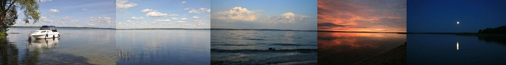
Озёрный край
По праву Виштынецкую возвышенность называют озёрным краем. Здесь находятся крупные и глубокие озёра ледникового происхождения: Виштынецкое, Чистое, Мариново, Камышовое, Проточное и Рыбное.
В исходном тексте сайта приводятся следующие характеристики Виштынецкого озера: площадь водного зеркала более 16 км², максимальная глубина около 54 м, объём пресной воды — 258 млн м³. Указаны 22 вида рыб и около 150 видов беспозвоночных животных. Эти цифры сохранены как сведения из старого материала и требуют сверки с актуальными научными источниками.
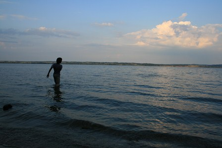
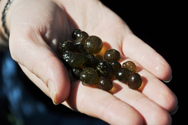
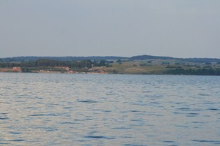
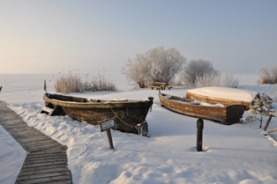
Охрана озера
В исходной версии сайта сообщалось, что с 1974 года Виштынецкое озеро является памятником природы, имеющим природно-историческое и научно-познавательное значение. Там же приводилась формулировка о запрете деятельности, наносящей вред памятнику природы и окружающей его среде.
Посещение озера: исторические сведения
В старом тексте были перечислены правила поведения на берегу: установка палаток, разведение костров только в специально оборудованных местах, запрет движения и стоянки автомобилей вне дорог и площадок, замусоривания территории и мойки машин. Также упоминались ограничения на моторные лодки, отдельные правила рыбалки и требования к документам для посещения пограничной зоны.
В первоначальной версии страницы отдельно указывались ограничения на лов угря и рыбалку в бухте «Тихая», правила использования плавсредств, разрешённые орудия лова и норма вылова 3 кг. Эти сведения сохранены здесь как содержание исторической публикации, а не как актуальная инструкция.
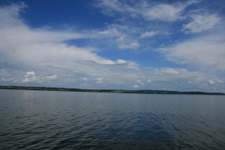
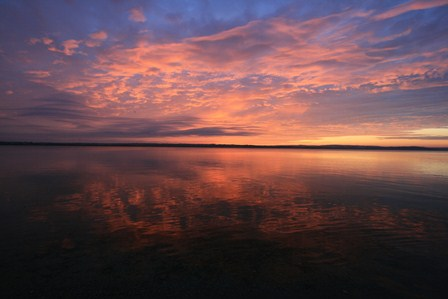
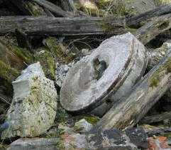
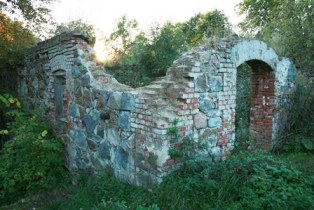
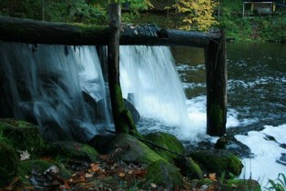
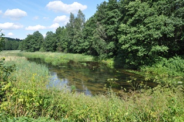
Река Писса и посёлок Ягодное
В исходной галерее была и небольшая историческая заметка: в посёлке Ягодное издавна существовала мельница, где каменные жернова вращала сила падающей воды; к моменту публикации старого сайта от мельницы оставались руины.
Фото: А. Соколов, 2014 г. — фотокредит исходной страницы.
Источники старой страницы
Решение исполкома Калининградского областного совета депутатов трудящихся от 10 ноября 1974 г. № 347 «О признании озера Виштынецкого и реки Красной памятниками природы».
Озеро Виштынецкое / Н. К. Алексеев, А. Г. Демидова, Т. А. Берникова и др. — Калининград: Калининградское книжное издательство, 1976. — 47 с.
Виштынецкое озеро: природа, история, экология / В. В. Орлёнок, Г. М. Баринова, П. П. Кучерявый и др. — Калининград: Изд-во КГУ, 2001. — 212 с.
Озеро Виштынецкое / отв. ред. К. В. Тылик, С. В. Шибаев. — Калининград: И. П. Мишуткин, 2008. — 144 с.